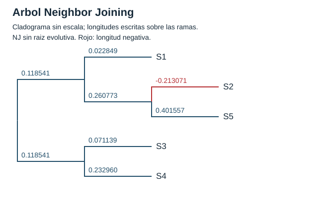

Neighbor Joining con las cinco secuencias

S2 + S5 Q=-3.543831 ramas=-0.213071, 0.401557
S1 + (S2,S5) Q=-2.123766 ramas=0.022849, 0.260773
S3 + S4 Q=-1.082360 ramas=0.071139, 0.232960
Arista final: (S1,(S2,S5)) -- (S3,S4) d=0.237081
Laboratorio 03a | Resultados generados por C++ | Captura del visor de archivos de la ejecucion.